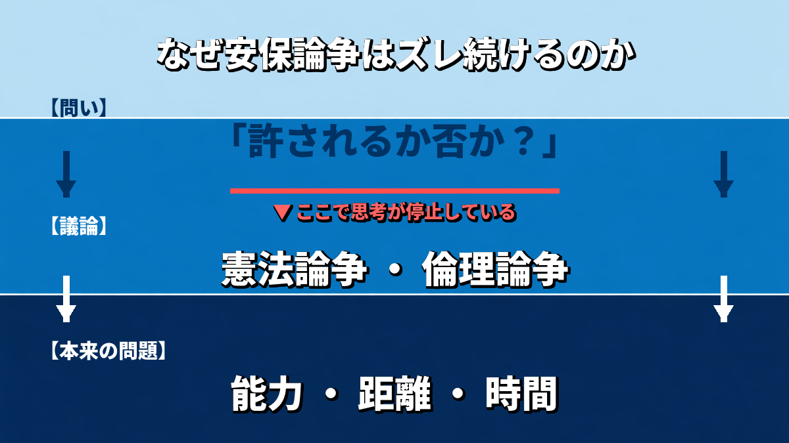

専守防衛の議論が始まるたびに、日本の政治は一つのお決まりの構造を反復する。「敵基地攻撃は憲法上許されるか」「反撃能力の行使はどこまで認められるか」。問いが立ち上がり、賛否が交錯し、「燃料を注入しはじめたときか、半分くらい入ったらよいか」といった戦術レベルの話に落ちて沈静化する。そして次の危機が来るまで繰り返す。元統合幕僚長の河野克俊氏は、かねてそのように指摘していた。さらにこうも付け加えた。
「攻撃はアメリカにお願いします、日本は汚れ仕事はやりません、というのは国家の品格にかかわる」
2025年11月、トランプ政権が公表した国家安全保障戦略は、冒頭に戦略の定義を置いた。「戦略とは、目的と手段の本質的なつながりを説明する現実的計画だ」。同文書はさらに、冷戦後のアメリカが「実現不可能な目標を並べた願望リスト（laundry lists of wishes）」に堕したと自己批判した。この定義を日本の安保議論に当てはめると、問題の輪郭が浮かぶ。日本の議論は「目的と手段の整合」ではなく、「許されるか否か」を問い続けてきた。これは戦略ではなく倫理論争だ。
本来、安全保障とは「目的（生存）→手段（軍事・経済・外交）→コスト→効果」という工学的最適化問題と位置付けられる。問いはシンプルになる。相手は何を持ち、どの距離・時間で打撃可能か。意図は変化するが、能力は残る。この前提に立てば、「撃つか撃たないか」の議論は、そもそも問いの立て方が間違っている。

現代の抑止は「精神論」でも「持つか持たないか」の二択でもない。打撃力（キネティック）、経済制裁能力、サイバー・宇宙、同盟連携、継戦能力（補給・産業）。これらの統合体として設計されるものだ。「専守防衛」という概念はこの設計を妨げてきた。この概念は憲法9条に一言も書かれておらず、昭和40年代以降、もっぱら国会対策・野党対策として機能してきたにすぎない。F4戦闘機の空中給油装置が「周辺国への脅威」を理由に取り外された一件がその典型だ。2022年末のスタンドオフ防衛能力閣議決定においても、「中国の脅威への対処」とは明言されなかった。敵を名指しできない安保政策は、抑止としての機能に大きな疑問を残す。
問題は「分析の不足」ではない。安全保障の研究者も元当局者も、問題の所在を繰り返し指摘してきた。政治学者は保守・革新の対立軸の変容を論じ、元安保当局者は能力基準（Capability-based）への転換を唱え、国際政治学者は抑止論の更新を説く。それでも政策は動かない。分析が政治に届かない原因は、別のところにある。
それは、安全保障がイデオロギーの争点として機能してきたからだ。「強い防衛」か「平和主義」か、その旗を誰が持つかという競争が、戦略の中身を問う議論を駆逐してきた。安全保障がイデオロギーの軸になっている時点で、すでに保守政治は後退している。宇野重規の区別を借りれば「右翼は価値観、保守は責任」（日経新聞「保守を聞く」）だ。バーク的保守主義の核心は「抽象原理ではなく歴史的経験に基づく漸進的調整」にある。憲法9条をめぐる旗の奪い合いが「保守の証明」と化した瞬間、保守は信仰告白の政治に転落している。
このイデオロギー単軸化の代償は二重だ。まず、抑止力の実質的整備が遅れる。意図ではなく能力を基準に脅威を評価し、それに対応する反撃能力と継戦能力を整備するという基本が、「持つべきか否か」という規範論争に阻まれてきた。次に、財政・少子化・技術覇権という国家存立の根幹をなす問題が、安保左右対立という磁場に弾き出され、政治の中心に入れない。保守の旗を立てるために安保論争を続けた結果、保守が本来取り組むべき問題が後回しになり続ける構造が固定化した。観察者として議論を精緻化する政治家は育っても、設計者として責任を引き受ける政治指導者が育たない。
転換の方向は具体的に示せる。まず言葉の再設計だ。「専守防衛」を「拒否的抑止＋限定的打撃能力」へ、「敵基地攻撃」を「反撃能力（counterstrike）」へ。言葉が思考を拘束している以上、言葉から変えなければならない。次に、問いの土俵を変えることだ。「許されるか」から「必要か、どう設計するか」へ。さらに、超党派の戦略評価機関を設け、国会の党派対立から一定距離を置いた戦略審議の場を確保する。安保論争が党派対立に回収され続ける限り、戦略の中身は深まらない。